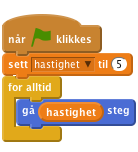
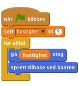
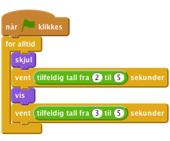
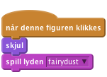
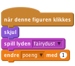
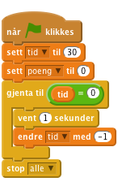

Spøkelsesjakten
1
Dette prosjektet er inspirert av tivolispillet Whack-a-mole, hvor man slår muldvarper ned igjen i hullene sine. I vårt spill er det spøkelsene som blir borte når vi klikker på dem. Målet er å klikke bort flest mulig i løpet av 30 sekunder.

| Sjekkliste | Følg instruksjonene på lista. Huk av etter hvert |
|---|---|
| Test | Klikk på det grønne flagget for å teste koden |
| Lagre | Husk å lagre koden når du har lagt til noe nytt |
Du skal nå lage en variabel som styrer hvor fort spøkelset beveger seg. Denne kan vi senere bruke til å endre hastigheten når spillet er i gang.


Klikk på det grønne flagget. Hvorfor sitter spøkelset fast når det treffer kanten på skjermen?
For å unngå at spøkelset sitter fast i veggen må vi få det til å snu når det treffer den. Dette gjøres ved å legge til blokken ´sprett tilbake ved kanten´. Skriptet ser da slik ut:

For å hindre at spøkelset snur seg opp-ned, klikk på  -knappen i spøkelsets infoboks.
-knappen i spøkelsets infoboks.
Klikk på det grønne flagget.
For å gjøre spillet morsommere vil vi få spøkelset til å dukke opp og forsvinne.

Klikk på det grønne flagget. Flytter spøkelset seg fra side til side? Forsvinner det og dukker opp igjen helt tilfeldig? Da er alt riktig.
tilfeldig tall fra ( ) til ( ). Hva skjer hvis du velger veldig store eller små tall? (Dette gir deg kanskje et nytt hint for hvordan vi skal få spøkelset til å gå fortere jo lenger man spiller.)For å gjøre dette til et ordentlig spill må vi gi spilleren noe å gjøre - for eksempel å klikke bort spøkelset. Når det skjer vil vi også at det skal komme en stilig tryllelyd!

Klikk på det grønne flagget. Forsvinner spøkelset med en tryllelyd når du klikker på det?
Vi har et spøkelse å trylle bort, så nå vil vi ha poeng for å gjøre det! Vi vil også ha en tidsfrist, slik at det er om å gjøre å få flest mulig poeng på denne tiden. Vi løser begge deler ved å bruke variabler.


Hvis ett spøkelse er bra, må vel flere være enda bedre! La oss ha tre spøkelser flyvende rundt!

+Klikk på det grønne flagget. Har du nå tre spøkelser som flyr fra side til side? Som plutselig forsvinner og dukker opp igjen? Forsvinner når du klikker på dem?
Gratulerer! Da har du gjort alt riktig!
Bra jobba! Nå er du ferdig, og det er på tide med litt seriøs spilling. Husk også at du kan dele spillet med vennene dine. Det gjør du ved å klikke på ´Legg ut´ i toppmenyen.